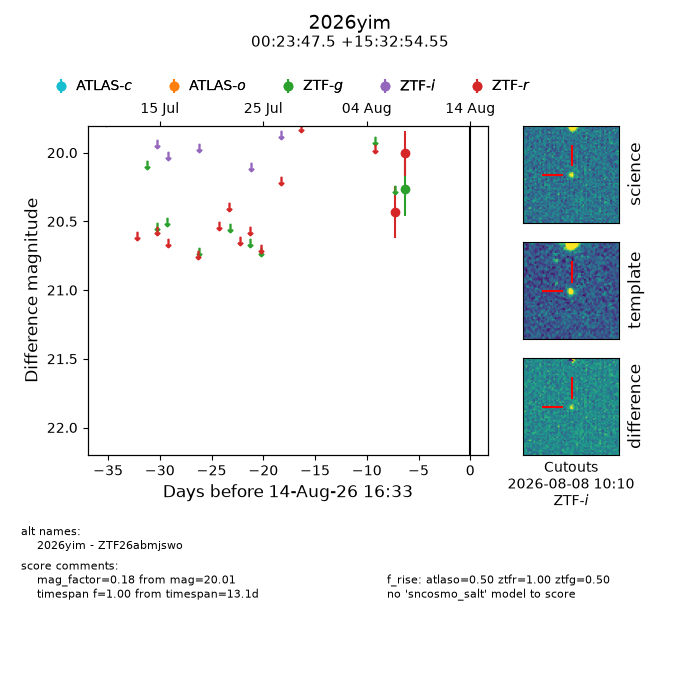
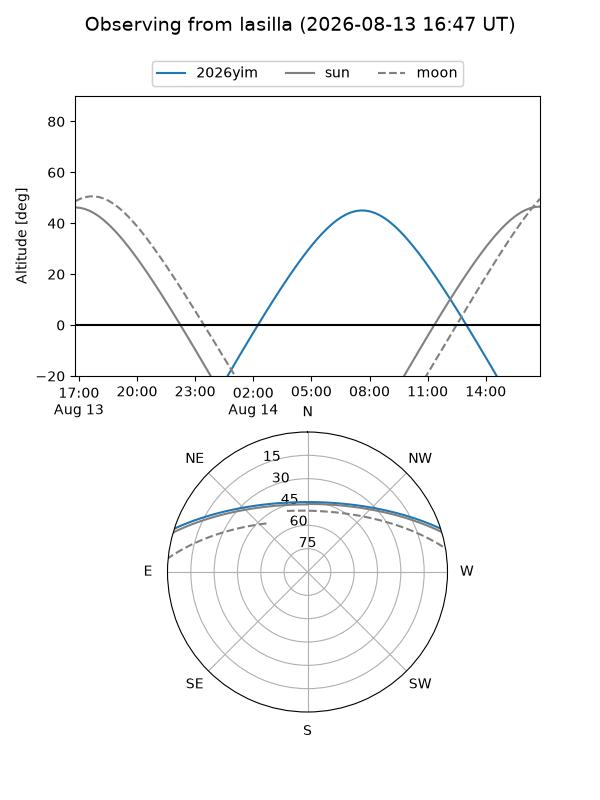
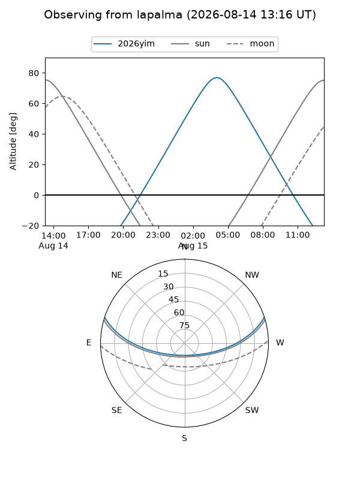
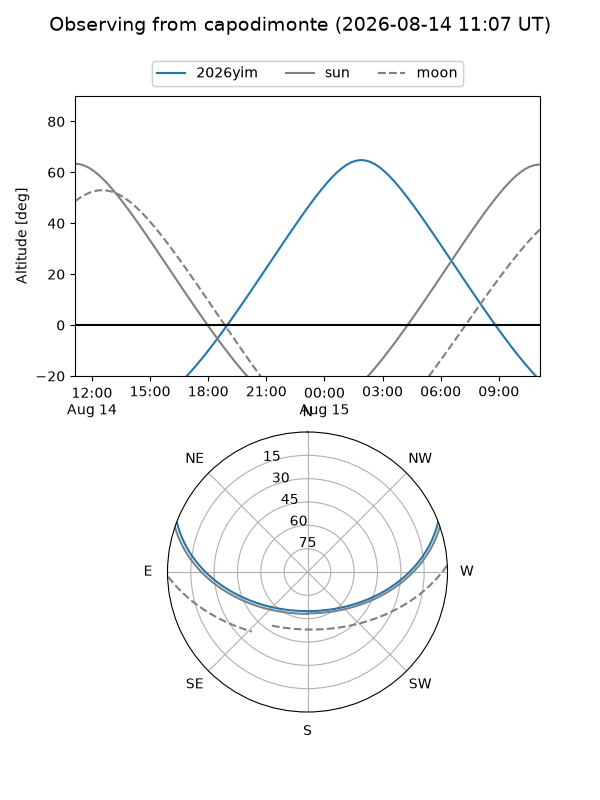

2026yim
Target 2026yim at 2026-08-14 16:36
Aliases and brokers:
FINK-ZTF: ztf.fink-portal.org/ZTF26abmjswo
Lasair-ZTF: lasair-ztf.lsst.ac.uk/objects/ZTF26abmjswo
ALeRCE-ZTF: alerce.online/object/ZTF26abmjswo
YSE-PZ: ziggy.ucolick.org/yse/transient_detail/2026yim
TNS name: wis-tns.org/object/2026yim
Direct TNS query: direct search
alt names
ZTF26abmjswo (ztf,fink_ztf)
2026yim (tns,yse)
Coordinates:
equatorial (ra, dec) = 5.9481,+15.54848
equatorial (HMS+DMS) = 00:23:47.53,+15:32:54.55
galactic (l, b) = (113.1818,-46.79922)
Flags:
TNS type: nan
peak dt: -5.5
Photometry:
last atlaso=nan, ztfg=20.26, ztfr=20.01
1 atlaso, 1 ztfg, 2 ztfr detections
Lightcurve

Visibility



Additional plots